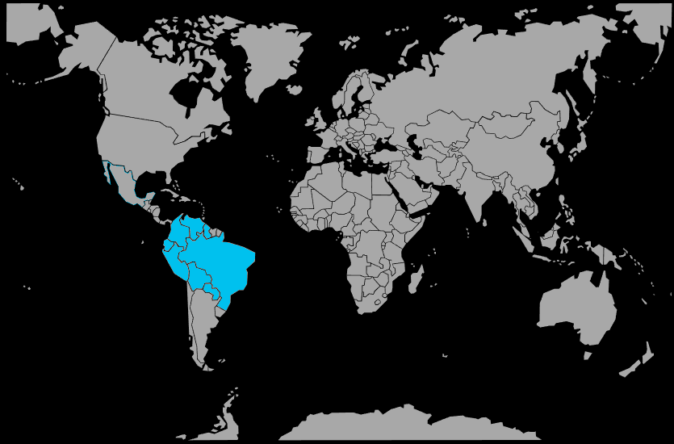

Systématique
- Ordre : Cichliformes
- Famille : Cichlidae
- Sous-famille : Cichlinae
- Genre : Mesonauta
- Espèce : Mesonauta festivus
Mesonauta festivus est un cichlidé sud‑américain élégant, proche du scalaire, présentant un corps haut et une bande sombre diagonale caractéristique.
Les adultes atteignent 10–15 cm selon les souches, avec une espérance de vie pouvant dépasser 8–10 ans en bonnes conditions.
C’est un cichlidé plutôt calme pour sa famille, qui vit en couple ou en petit groupe et occupe surtout la zone médiane, restant volontiers à proximité des racines, branches et plantes hautes.
Il peut cependant devenir nettement territorial en période de reproduction et doit être associé à des poissons de taille moyenne, non agressifs mais suffisamment vifs pour ne pas se faire intimider.
Reproduction : ovipare, ponte sur substrat (feuilles larges, racines, pierres) soigneusement nettoyé; les deux parents assurent la garde des œufs puis des alevins.
Un bac bien structuré avec des supports de ponte adaptés, une eau de bonne qualité et un environnement calme augmente les chances d’obtenir une reproduction et des soins parentaux complets.
Dimorphisme sexuel : mâles généralement plus grands, avec nageoires dorsale et anale plus effilées et étirées que chez les femelles.
Biotope : zones calmes de rivières et de lagunes des bassins amazoniens et paraguayens, proches des berges, parmi racines, branches immergées et végétation dense.
Répartition
Origine naturelle :
- Amérique du Sud : bassins de l’Amazone, de l’Orénoque, du Paraná et du Paraguay.
- Zones calmes proches des berges, avec racines, branches immergées et parfois eau légèrement teintée par les tanins.
L’espèce fréquente des eaux plutôt lentes, souvent légèrement acides et riches en matière organique, ce qui justifie l’usage de racines et de feuilles en aquarium.
Paramètres de maintenance
Température : 24 à 28 °C.
pH : 5,5 à 7,5, avec une préférence pour une eau douce et légèrement acide à neutre.
GH : 2 à 10 °dGH, eau douce à moyennement dure.
Courant : faible à moyen, avec une filtration efficace mais sans excès de remous.
Volume conseillé : ≥ 200–250 L pour un couple ou un petit groupe, avec une bonne hauteur d’eau et un décor structuré.
Régime alimentaire
Régime : omnivore à forte composante carnée; accepte granulés et paillettes de qualité pour cichlidés, complétés par des proies vivantes ou congelées (artémias, vers, daphnies) et une petite part végétale.
Des repas variés, distribués en petites quantités plusieurs fois par jour, permettent de maintenir de belles couleurs, une bonne croissance et une eau moins chargée en déchets.